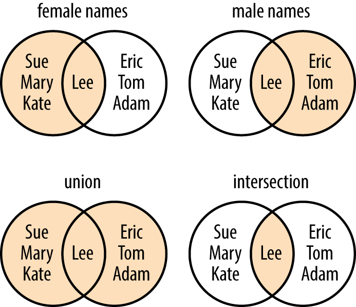

print('hello world!')hello world!Let us start with our first piece of code: the most famous sentence that we want to be able to print when starting to learn how to program is ‘Hello, world.’ For that, we can use the built-in function print(), which prints output to the command line. We add the sentence ‘Hello, world’ in parentheses.
print('hello world!')hello world!The built-in function print() can help us grasp what we are actually doing right now. For example, we can also print numbers.
print(1)1You probably noticed that I did not use quotation marks this time. That’s because 1 is a different type – a number type called an integer.
In general, we differentiate between four types of data: Integer, Float, Boolean, and String.
We can use the built-in function type() to check the type of objects.
type(1)inttype (2.5)floattype(True)booltype("Hello world!")strNow that we understand data types, the question is: How do we use them effectively? A practical approach is to use variables. Variables allow us to store these values efficiently.
To be precise, variables allow us to bind a name to an object, meaning we can associate names with our values. This can be done with all types.
# Store a text in the variable txt
txt = "This is a text."
print(txt)This is a text.# Store numbers in the variable number1 and number2
n1 = 2
n2 = 2.5
print("Number 1:", n1)
print("Number 2:", n2)Number 1: 2
Number 2: 2.5# Store boolean in variables
participated = True
absent = False
print("Participated:", participated)
print("Absent:", absent)Participated: True
Absent: FalseVariables allow us to store values and types, which can be utilized to solve various tasks. A common example is using Python to perform simple math operations.
We can use numeric types to perform basic math operations such as addition, subtraction, division, and multiplication. To do this, we simply use the appropriate math operators.
# Save the numbers 1,3 and 5 in variables n1, n2 and n3
n1 = 1
n2 = 3
n3 = 5# Addition
print(n1 + n2)4# Subtraction
print(n1 - n2)-2# Multiplication
print(n1 * n2)3# Division
print(n1/n3)0.2A very handy feature is that some of the same operators can be used on other data types, such as strings.
# Here we create short string sequences
t1 = "participant"
t2 = " 1 "
t3 = "attended"
t4 = " great"# We can use + to add them to one string
print(t1 + t2 + t3)participant 1 attended# We can use * to repeat certain sequences
print(t1 + t2 + t3 + 3 * t4)participant 1 attended great great greatYou may have already noticed that I added whitespace around the ‘1’ and before ‘great.’ You might also want to add tab stops and new lines. For that, we can use ‘ for tabs and’’ for new lines.
lines = "Lyrics:\tHappy Birthday to you\n\tHappy Birthday to you\n\tHappy Birthday dear Peter\n\tHappy Birthday to you."
print(lines)Lyrics: Happy Birthday to you
Happy Birthday to you
Happy Birthday dear Peter
Happy Birthday to you.# We can also indicate strings that cover multiple lines with """.
lines = """Lyrics:\tHappy Birthday to you
\tHappy Birthday to you
\tHappy Birthday dear Peter
\tHappy Birthday to you."""
print(lines)Lyrics: Happy Birthday to you
Happy Birthday to you
Happy Birthday dear Peter
Happy Birthday to you.Aside from these simple operations, Python offers numerous methods to manipulate strings.
# This is the string that we are working with
participants = "participant_001,participant_002,participant_003,participant_004."# We can look at the length of the string using len()
length = len(participants)
print(length)64# We can count how many occurrences of a character can be found in a string using count()
commas = participants.count(",")
print(commas)3# We can clean the string, deleting certain characters at the end or the beginning of the string
clean = participants.strip(".")
print("Old:", participants)
print("New:", clean)Old: participant_001,participant_002,participant_003,participant_004.
New: participant_001,participant_002,participant_003,participant_004# We can replace certain parts of a string
print("Replaced 004 through 005:\t", participants.replace("participant_004", "participant_005"))
# And we can combine these operations
new_participants = participants.strip(".").replace("participant_004", "participant_005")
print("Cleaned and replaced:\t\t", new_participants)Replaced 004 through 005: participant_001,participant_002,participant_003,participant_005.
Cleaned and replaced: participant_001,participant_002,participant_003,participant_005# We can also create a list out of a string
list_part = new_participants.split(",")
print(list_part)['participant_001', 'participant_002', 'participant_003', 'participant_005']# And we can fuse the list together to a string (choosing any connector (here: ;)
new_string = (";").join(list_part)
print(new_string)participant_001;participant_002;participant_003;participant_005What you have just seen is a list, one of the four collection data types. In total, we have lists, sets, dictionaries, and tuples. These data types allow us to store more than one data point in a single variable.
The first type is lists, which offer a lot of flexibility. They can store data of any type and even multiple instances of the same value.
We just created our first list using split(), but there is also a more direct way to create one. To create a list, we can either use square brackets or the list() method.
participated = list()
print(participated)[]# If we create a new list, we can also directly fill it with items
participated = ["participant_001", "participant_002", "participant_005"]
print(participated)['participant_001', 'participant_002', 'participant_005']# We can also append new items to a list. With append(), we will always add it to the end
participated = ["participant_001", "participant_002", "participant_005"]
participated.append("participant_004")
print(participated)['participant_001', 'participant_002', 'participant_005', 'participant_004']# Instead of appending it at the end, we can also insert an item at a certain position.
participated.insert(2, "participant_003")
print(participated)
# Note: list.insert() never overrides an existing element. It always inserts, which means it adds a new element and shifts the others to the right.['participant_001', 'participant_002', 'participant_003', 'participant_005', 'participant_004']A very handy feature is that you can select individual items from a list using their index – the number assigned to them in the sequence of items. To do this, you use square brackets.
In Python, the first element has the index number 0.
If we have the following list: - participant_001 - participant_002 - participant_003 - participant_005 - participant_004
Then they have the following indices - participant_001 -> 0 - participant_002 -> 1 - participant_003 -> 2 - participant_005 -> 3 - participant_004 -> 4
Side note: This also works with strings!
Let’s play around with this!
# To select the first participant, we use the index 0
participated = ["participant_001", "participant_002", "participant_005"]
first = participated[0]
print(first)participant_001# You can also change your perspective and look at the list from the end, the last item is then number -1
last = participated[-1]
print(last)participant_005# We can also extract multiple items. For that, we have to state the range that we want to extract
middle = participated[1:2]
print(middle)['participant_002']# We can remove participants using remove(). This removes all participants with this name
participated.remove("participant_005")
print(participated)
# Or we use del together with the index
del participated[-1]
print(participated)['participant_001', 'participant_002']
['participant_001']# if we forgot the index of a certain item, we can also ask for it
print(participated.index("participant_001"))0# We can also sort a list
participated = ["participant_001", "participant_005", "participant_002"]
participated.sort()
print(participated)['participant_001', 'participant_002', 'participant_005']# Or ask for its length
print(len(participated))3It’s important to know that, for all variables, using = will overwrite the values previously saved. This can also be applied in combination with indices.
participated = ["participant_001", "participant_002", "participant_003", "participant_006"]
print('Original:', participated)
participated[-1] = "participant_005"
print('Adjusted:', participated)Original: ['participant_001', 'participant_002', 'participant_003', 'participant_006']
Adjusted: ['participant_001', 'participant_002', 'participant_003', 'participant_005']# If you want to make a copy of a list, be sure to use either copy() or [:]
participated_copy = participated.copy()Another collection data type is tuples. The biggest difference between lists and tuples is that tuple elements cannot be changed.
participated = ["participant_001", "participant_005", "participant_002"]
# if we want to transform a list into a tuple or create a new tuple, we can use tuple()
part_tuple = tuple(participated)
print(part_tuple)('participant_001', 'participant_005', 'participant_002')The third collection data type is dictionaries. They function like a real dictionary, meaning they have keys and values. Using this type, we can build the following structure:
participant_name: Peter
participant_age: 50
participant_city: Rotterdam
In this dictionary, participant_name, participant_age, and participant_city are the keys, while Peter, 50, and Rotterdam are the values. To create a dictionary, we use curly brackets.
data = {"participant_name": "Peter", "participant_age": 50, "participant_city": "Rotterdam"}
print(data){'participant_name': 'Peter', 'participant_age': 50, 'participant_city': 'Rotterdam'}# To retrieve the values saved in a dictionary, you can use the keys
print(data["participant_age"])50# You can change the values by using the keys
data["participant_city"] = "Utrecht"
print(data){'participant_name': 'Peter', 'participant_age': 50, 'participant_city': 'Utrecht'}# and you can delete entries
del data["participant_age"]
print(data){'participant_name': 'Peter', 'participant_city': 'Utrecht'}# To get an overview of all keys or values, you can use keys() and values().
print("Keys:", data.keys())
print("Values:", data.values())
#If you want all pairs, you can use items
print("Items:", data.items())Keys: dict_keys(['participant_name', 'participant_city'])
Values: dict_values(['Peter', 'Utrecht'])
Items: dict_items([('participant_name', 'Peter'), ('participant_city', 'Utrecht')])# You can also merge two dictionaries using update()
extra = {"participant_birthmonth": "June", "participant_occupation": "researcher"}
data.update(extra)
print(data){'participant_name': 'Peter', 'participant_city': 'Utrecht', 'participant_birthmonth': 'June', 'participant_occupation': 'researcher'}# and you can empty dictionaries using clear()
print("Before", extra)
extra.clear()
print("After", extra)Before {'participant_birthmonth': 'June', 'participant_occupation': 'researcher'}
After {}The last collection data type is sets. All values in a set are unique and unordered. Unlike other collection types, sets do not support indexing. You may have encountered sets in your high school math class.

# To look at the intersection of two sets, you can either use the ampersand & or a.intersection(b) (with a one set, and b the other)
female = {'Sue','Mary','Kate','Lee'}
male = set(['Lee','Eric','Tom','Adam'])
print(female & male)
print(female.intersection(male)){'Lee'}
{'Lee'}# To look at the union of two sets, you can either use | or a.union(b) (with a one set, and b the other)
print(female | male)
print(female.union(male)){'Lee', 'Mary', 'Adam', 'Eric', 'Tom', 'Sue', 'Kate'}
{'Lee', 'Mary', 'Adam', 'Eric', 'Tom', 'Sue', 'Kate'}# To look at the difference between the two sets, you can either use - or a.difference(b) (with a one set, and b the other)
print(female - male)
print(female.difference(male)){'Sue', 'Mary', 'Kate'}
{'Sue', 'Mary', 'Kate'}In real-life scenarios, you may want to exclude certain participants or apply different tests based on their attributes. For example, you could say:
If the participant is older than 65, add their age to the group of seniors.
Else if the participant is younger than 18, add their age to the group of juniors.
Else, add everyone else’s age to the group of adults.
We can implement similar logic in Python using if, elif, and else statements.
# List of participants
participant_age = 51
# Empty lists to save whether they are seniors, juniors or adults
seniors = []
juniors = []
adults = []
# If age is greater than 65...
if participant_age > 65:
# ...save in seniors
seniors.append(participant_age)
# else if age is lower than 18...
elif participant_age < 18:
# ...save in juniors
juniors.append(participant_age)
# else (if neither older than 65 nor younger than 18)...
else:
# ...save in adults
adults.append(participant_age)
# print results
print("Seniors", seniors)
print("Juniors", juniors)
print("Adults", adults)Seniors []
Juniors []
Adults [51]# We can also check whether something equals a string or number using ==
participant_name = "Fred"
# if the name is Adam...
if participant_name == "Adam":
# ...print that you found him
print("Found him!")
# else (if not Adam)...
else:
#...print wrong one
print("Wrong one!")Wrong one!# We can also check whether something is in a list using in
list_names = ["Lisa", "Lissa", "Lia", "Liia", "Lija", "Lira", "Liua", "Liaa", "Lina", "Lia", "Lima"]
name = "Adam"
# if Adam is in the list of names...
if name in list_names:
# ...print found it
print("Found it!")
# if not...
else:
# ...print no luck
print("No luck!")No luck!Typically, we want to perform actions for all our participants, which means we need to repeat them. For this purpose, we use loops.
We differentiate between two types of loops: while and for.
- In a while loop, an action is performed as long as a certain condition is True. - In a for loop, an action is repeated a preset number of times.
Let’s sort our participants using a while loop!
# Looking at the participants, we want to sort them. We stop once we reach 10 participants.
participants_ages = [11,12,13,14,18,25,26,32,45,50,57,61,65,70,78]
no_iteration = 0 # will be used to keep number of iterations (but also as index)
seniors = []
juniors = []
adults = []
# while no_iteration (number of iterations) is lower than 10
while no_iteration < 10:
# print number of repetitions
print("Repetition no.", no_iteration)
# Sort them by age
if participants_ages[no_iteration] > 65:
seniors.append(participants_ages[no_iteration])
print("Added Senior!", participants_ages[no_iteration])
elif participants_ages[no_iteration] < 18:
juniors.append(participants_ages[no_iteration])
print("Added Junior!", participants_ages[no_iteration])
else:
adults.append(participants_ages[no_iteration])
print("Added Adult!", participants_ages[no_iteration])
# in a while loop, do not forget to increase your end condition variable
no_iteration = no_iteration+1Repetition no. 0
Added Junior! 11
Repetition no. 1
Added Junior! 12
Repetition no. 2
Added Junior! 13
Repetition no. 3
Added Junior! 14
Repetition no. 4
Added Adult! 18
Repetition no. 5
Added Adult! 25
Repetition no. 6
Added Adult! 26
Repetition no. 7
Added Adult! 32
Repetition no. 8
Added Adult! 45
Repetition no. 9
Added Adult! 50We can also only perform an action or leave the loop once we see a certain object, for that we can use break and continue.
break abruptly stops the loop continue just pushes the loop to the next repetition.
Let’s do nothing, when we see juniors and adults and stop once we see an older participant
participants_ages = [11,12,13,14,18,25,26,32,45,50,57,61,65,70,78]
no_iteration = 0
while no_iteration < 15:
print("Repetition no.", no_iteration)
if participants_ages[no_iteration] > 65:
print("STOP!", participants_ages[no_iteration])
break
elif participants_ages[no_iteration] < 18:
no_iteration = no_iteration+1
continue
else:
no_iteration = no_iteration+1
continueRepetition no. 0
Repetition no. 1
Repetition no. 2
Repetition no. 3
Repetition no. 4
Repetition no. 5
Repetition no. 6
Repetition no. 7
Repetition no. 8
Repetition no. 9
Repetition no. 10
Repetition no. 11
Repetition no. 12
Repetition no. 13
STOP! 70Another approach to iterating over items in a list or dictionary is the for loop. It repeats an action for a specified number of times.
In prose, this would be: For every participant’s age in the list of participant_ages, sort them into the appropriate group.
participants_ages = [11,12,13,14,18,25,26,32,45,50,57,61,65,70,78]
seniors = []
juniors = []
adults = []
# for every age of the participants...
for age_p in participants_ages:
# sort in the right group
if age_p > 65:
seniors.append(age_p)
print("Added Senior!", age_p)
elif age_p < 18:
juniors.append(age_p)
print("Added Junior!", age_p)
else:
adults.append(age_p)
print("Added Adult!", age_p)Added Junior! 11
Added Junior! 12
Added Junior! 13
Added Junior! 14
Added Adult! 18
Added Adult! 25
Added Adult! 26
Added Adult! 32
Added Adult! 45
Added Adult! 50
Added Adult! 57
Added Adult! 61
Added Adult! 65
Added Senior! 70
Added Senior! 78# We can also combine for loops with dictionaries to find certain items or do an action based on a key or value
participants = {"p1": 11, "p2": 25, "p3": 43, "p4":55, "p5":66}
# for every participant number (p1, p2, ...)
for p_no in participants:
# sort in the right group
if participants[p_no] > 65:
seniors.append(p_no)
print("Added Senior!", p_no)
elif participants[p_no] < 18:
juniors.append(p_no)
print("Added Junior!", p_no)
else:
adults.append(p_no)
print("Added Adult!", p_no)Added Junior! p1
Added Adult! p2
Added Adult! p3
Added Adult! p4
Added Senior! p5# We can also iterate over two elements at the same time, for example, when looking at dictionaries
for key, value in participants.items():
print("Key:", key, "Value:", value)Key: p1 Value: 11
Key: p2 Value: 25
Key: p3 Value: 43
Key: p4 Value: 55
Key: p5 Value: 66# If we want repeat the actions a certain number of times, for example, 11 times, we can use range().
# range() creates a list of numbers starting at 0 until the number given as argument
for number in range(11):
print(number)0
1
2
3
4
5
6
7
8
9
10# this also works in combination with len(), e.g. with the length of a list
ages = [11, 25, 43, 55, 66]
for p_no in range(len(ages)):
if ages[p_no] > 65:
seniors.append(ages[p_no])
print("Added Senior!", ages[p_no])
elif ages[p_no] < 18:
juniors.append(ages[p_no])
print("Added Junior!", ages[p_no])
else:
adults.append(ages[p_no])
print("Added Adult!", ages[p_no])Added Junior! 11
Added Adult! 25
Added Adult! 43
Added Adult! 55
Added Senior! 66Another handy function is enumerate(), you can combine it with a list to add indices to it.
ages = [11, 25, 43, 55, 66]
for index, value in enumerate(ages):
print("Index:", index, "Value:", value)Index: 0 Value: 11
Index: 1 Value: 25
Index: 2 Value: 43
Index: 3 Value: 55
Index: 4 Value: 66